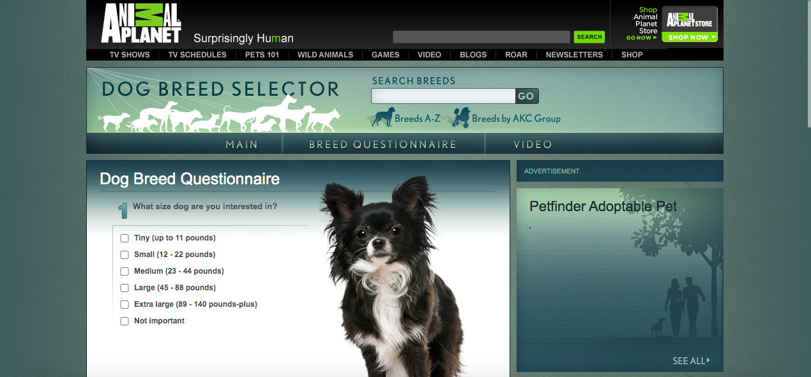

This dog breed selector site is great! They have three different quizzes. The first quiz is for someone who don't have any idea what they want. The second quiz is for someone who has an idea what type of dog they want, but still not sure about breeds or breed they want. The third quiz is for someone who have a dog breed or breeds in mind, and want to check the compatiblty.
Animal planet is also a good dog breed selector. They try to find dog breeds that fit the size, and personality they want in their dog. They also try to match the dog breed or breeds to they life style as well.
